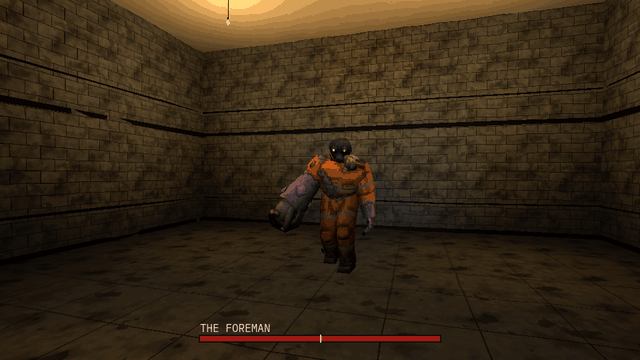

Tutorials › Make a Boss Fight with Phases
How to Make a Boss Fight with Phases in Godot 4
A boss's health, phases that begin at a share of it with a transition clip, and each phase's attacks drawn by weight, never the same three times running.

A boss fight is a boss that changes: at half its health it fights another way. This script, a Node you add to any animated model, is that core: the boss's health, phases that each begin when the health falls to their share of it, a transition clip the boss cannot be hurt during, and each phase's attacks drawn by weight, never the same one three times running. Its signals tell the rest of the game when a phase begins, an attack starts and the boss is defeated.
Script: boss_phases.gd (MIT) · Godot 4.3 or newer · its folder on GitHub
How to use it
- Add a
Nodeas a child of the boss's model, attachboss_phases.gdto it and setanim_pathto the model'sAnimationPlayer. - Edit
phasesin the Inspector, one dictionary a phase:below(the share ofmax_healthit begins at, 1.0 for the first),transition(the clip it plays as it begins, "" for none),idle(its clip between attacks) andattacks(its attack clips and their weights). Setdeath_clip, andpause_minandpause_max, the seconds between two attacks. With only two attacks in a phase the never-three-running rule evens their odds out (2 to 1 drew about 1.2 to 1 in the test), so give a phase three or more attacks when their weights matter. - From your weapon, call
hit(amount): it returns false when the hit did not count (during a transition, or once the boss is dead). - Connect
phase_changed(index),attack_started(clip)anddefeatedfor the rest: a health bar, a sound, the music, the arena's doors.
What it needs
- Godot 4.3 or newer.
- An animated model with an
AnimationPlayerwhose clips are the onesphasesnames: an idle, the attacks, a transition for each later phase, and a death.
Try it free
The Cordatix PSX Horror Free Sampler has the Offcut, the mini-boss of Cordatix PSX Horror Bosses, with its clips: put cordatix/psx_horror_bosses/models/offcut.glb in a scene, add the script under it with anim_path on its AnimationPlayer, and the script's two example phases (Idle, Attack, Attack2, Scream and Death) play with the Offcut's own clips. The pack's own boss fight kit adds what a whole fight needs: attacks in range only, wind-ups, staggers, a health bar and arenas.
How it was tested
In Godot 4.3 and 4.7.2, with the script's two example phases on the free sampler's Offcut as the sampler ships it: it stands in its idle clip, then attacks on its own and never the same attack three times running; the first phase draws its heavier attack more often; a hit counts; under half its health the second phase begins once with its transition clip, and hits do not count while it plays; the second phase draws its own weights; at zero it dies once, its death clip plays and nothing runs after.
The code
extends Node
## How to Make a Boss Fight with Phases in Godot 4
## Cordatix Godot 4 PSX tutorials, MIT licensed: https://github.com/GoldenSparrow-Dev/cordatix-godot-psx-tutorials
## The devlog: https://cordatix.itch.io/cordatix-psx-horror-bosses/devlog/1739569/how-to-make-a-boss-fight-with-phases-in-godot-4-cordatix-psx-horror-bosses
## A boss's phases (Godot 4.3+): its health, the phase it is in (each begins when the health falls to its share of
## the maximum), a transition clip it cannot be hurt during, and each phase's attacks drawn by weight, never the same
## one three times running. Add it to the boss as a child, point it at the boss's AnimationPlayer, call hit() from
## your weapon, and connect its signals for the rest (a health bar, a sound, the arena's doors).
signal phase_changed(index: int)
signal attack_started(clip: String)
signal defeated
@export var anim_path: NodePath
@export var max_health := 600.0
## Each phase: "below", the share of the maximum health it begins at (1.0 for the first); "transition", the clip it
## plays as it begins ("" for none); "idle", its clip between attacks; "attacks", its attack clips and their weights.
@export var phases: Array[Dictionary] = [
{"below": 1.0, "transition": "", "idle": "Idle", "attacks": {"Attack": 2.0, "Attack2": 1.0}},
{"below": 0.5, "transition": "Scream", "idle": "Idle", "attacks": {"Attack": 1.0, "Attack2": 2.0}},
]
## Seconds between two attacks, drawn between these two.
@export var pause_min := 0.6
@export var pause_max := 1.4
@export var death_clip := "Death"
var health := 0.0
var phase := 0
var history: Array[String] = [] # the attacks drawn, in order
var _anim: AnimationPlayer
var _busy := 0.0 # seconds the clip it plays now still runs
var _wait := 1.0
var _rng := RandomNumberGenerator.new()
func _ready() -> void:
_anim = get_node(anim_path) as AnimationPlayer
health = max_health
_anim.play(phases[0]["idle"])
## Damage to the boss. False when it did not count: during a transition, or once it is dead.
func hit(amount: float) -> bool:
if health <= 0.0 or _in_transition():
return false
health = maxf(health - amount, 0.0)
if health == 0.0:
_play(death_clip)
defeated.emit()
return true
var next := phase
for i in phases.size():
if health / max_health <= float(phases[i]["below"]):
next = i
if next > phase:
phase = next
_play(String(phases[phase]["transition"]))
phase_changed.emit(phase)
return true
func _physics_process(delta: float) -> void:
if health <= 0.0:
return
if _busy > 0.0:
_busy -= delta
if _busy <= 0.0:
_anim.play(phases[phase]["idle"])
return
_wait -= delta
if _wait <= 0.0:
var clip := _draw()
_play(clip)
history.append(clip)
attack_started.emit(clip)
_wait = _rng.randf_range(pause_min, pause_max)
## One of the phase's attacks by weight, leaving out one drawn the last two times.
func _draw() -> String:
var pool: Dictionary = phases[phase]["attacks"]
var ok: Array[String] = []
var total := 0.0
for clip in pool:
var twice: bool = history.size() >= 2 and history[-1] == clip and history[-2] == clip
if not twice or pool.size() == 1:
ok.append(clip)
total += float(pool[clip])
var r := _rng.randf() * total
for clip in ok:
r -= float(pool[clip])
if r <= 0.0:
return clip
return ok[-1]
func _play(clip: String) -> void:
if clip == "" or not _anim.has_animation(clip):
return
_anim.play(clip)
_busy = _anim.get_animation(clip).length
func _in_transition() -> bool:
var t := String(phases[phase]["transition"])
return t != "" and _busy > 0.0 and _anim.current_animation == t
The devlog and the pack
The step-by-step walkthrough is the devlog How to Make a Boss Fight with Phases in Godot 4 (Cordatix PSX Horror Bosses) on itch.io, written for Cordatix PSX Horror Bosses, a PS1-style asset pack by Cordatix for Godot 4, Unity, Unreal and Blender.